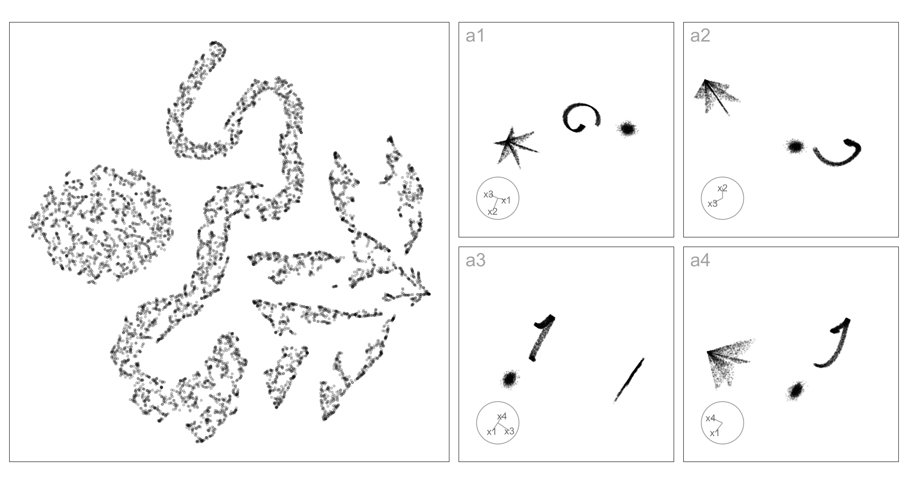
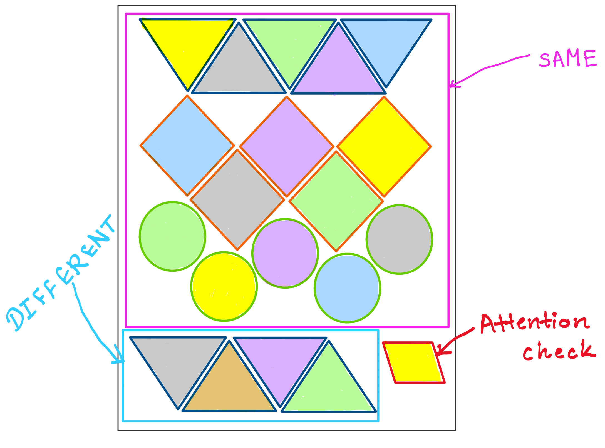
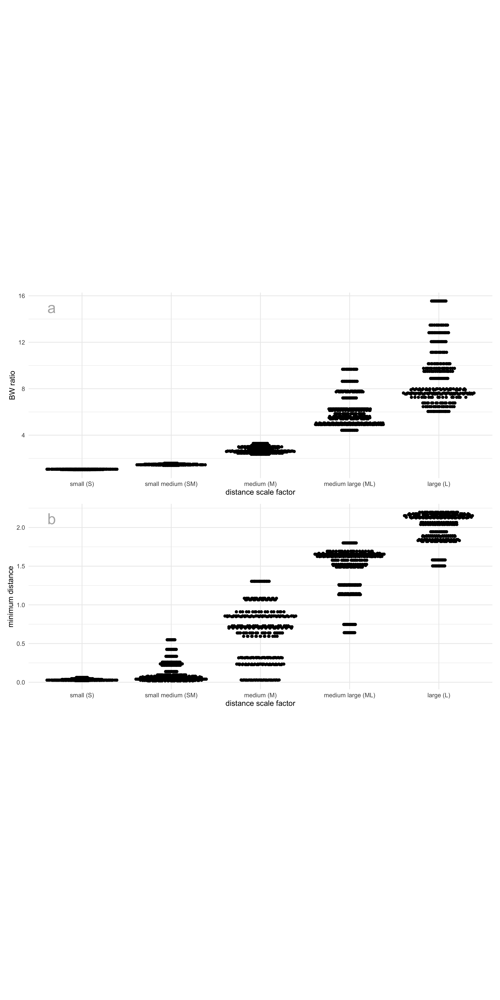
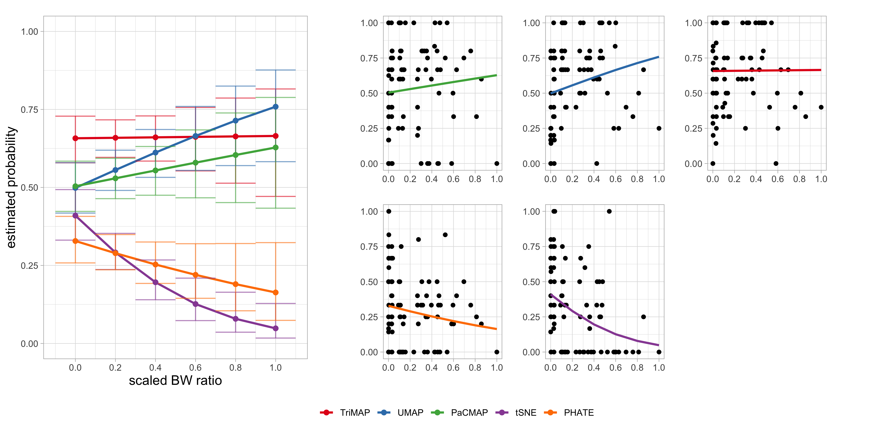
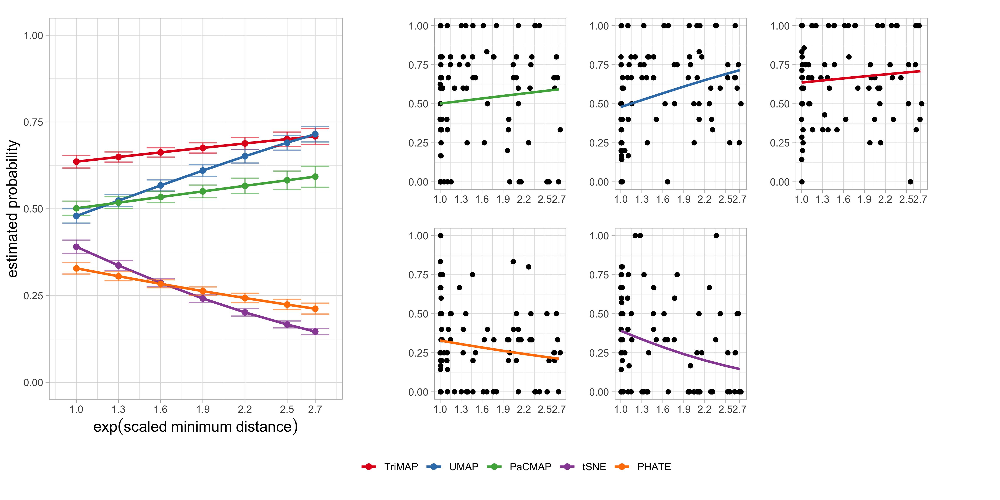
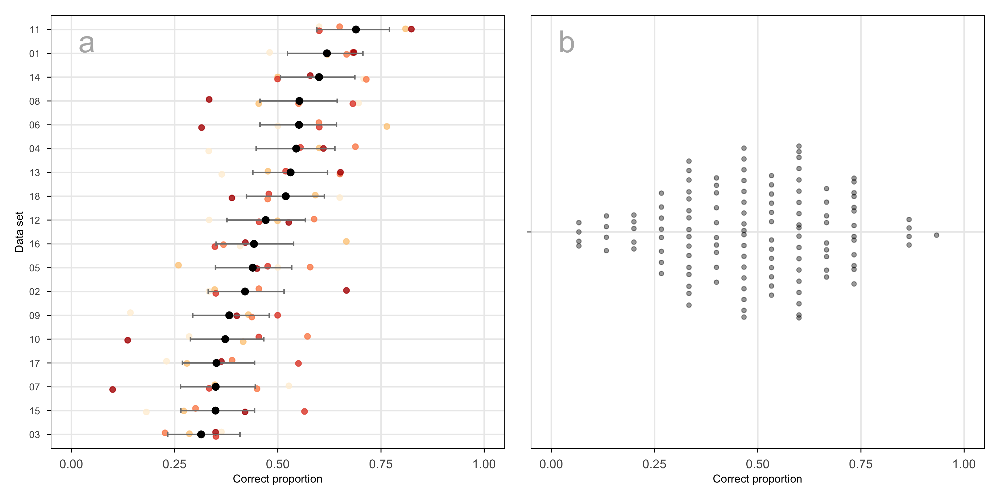
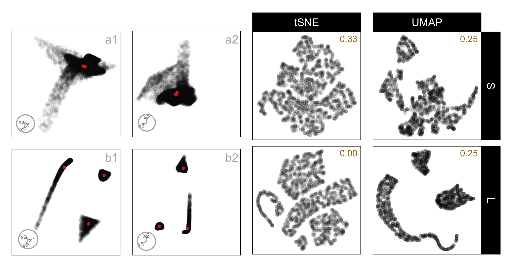
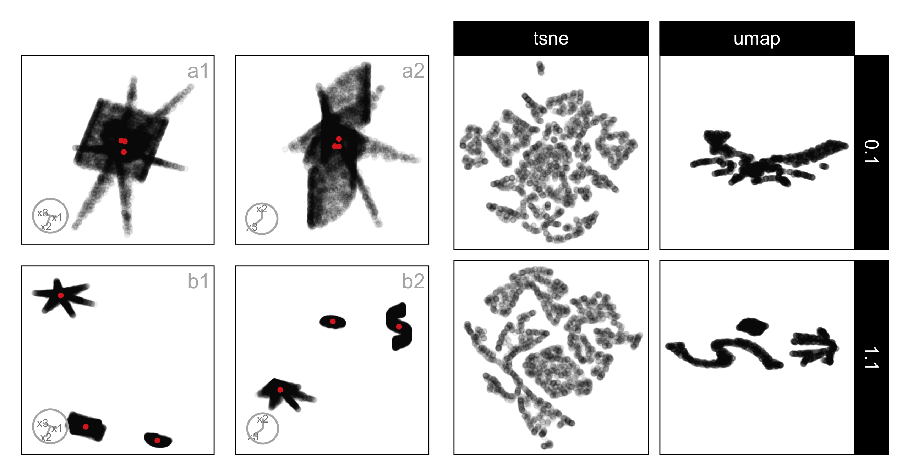

5 Perception and Misperception of Clustering in Nonlinear Dimension Reduction: A User Study
Nonlinear dimension reduction (NLDR) methods such as tSNE, UMAP, PHATE, TriMAP, and PaCMAP are popular ways to visualize high-dimensional data, yet their effectiveness for conveying structure remains mysterious. Many factors might contribute to perceptual miscommunication, which for cluster structure may include how their shapes are represented, or the degree of separation, or even number of clusters. This study evaluates how well NLDR methods preserve perceptually meaningful cluster structure using a human subject experiment with simulated data having three clusters with distinct geometries, unequal sizes, and varying inter-cluster separation. Subjects were asked whether a 2\text{-}D NLDR layout and a tour of linear projections showed the same high-dimensional data. Cluster separation was controlled for the study to be distance between means, but for analysing the results two additional measures, between-to-within (BW) ratio and the exponential scaled minimum inter-cluster distance, were used to account for highly nonlinear shapes. The results suggest interesting differences across methods. For example, UMAP and tSNE represent distance between clusters distinctly differently resulting in data being interpreted differently. These findings highlight the need for more studies to assess NLDR methods based on how effectively their visualizations support human perception of high-dimensional structure.
5.1 Introduction
Nonlinear dimension reduction (NLDR) is popular for making a suitable 2\text{-}D representation of high-dimensional (p\text{-}D) data by applying nonlinear transformations. Recently developed methods include t-distributed stochastic neighbor embedding (tSNE) (Maaten and Hinton 2008), uniform manifold approximation and projection (UMAP) (McInnes et al. 2018), potential of heat-diffusion for affinity-based trajectory embedding (PHATE) algorithm (Moon et al. 2019), large-scale dimensionality reduction using triplets (TriMAP) (Amid and Warmuth 2019), and pairwise controlled manifold approximation (PaCMAP) (Wang et al. 2021).
Nonlinear transformations allow for multiple shape-varying clusters to be represented in a single 2\text{-}D layout. In contrast, classical linear projection will often require multiple projections to show multiple clusters. Figure 5.1 illustrates this: a1-a4 show linear projections revealing three well-separated clusters, one spherical, one ribbon-like and one like a star-shaped pyramid. The NLDR layout (left) is generated using tSNE has a mostly reasonable display of the three clusters in a single view, although it struggles with the star pyramid. It does place the clusters very close to each other which does not reflect the large separation in the high-dimensional space.
In general, the dilemma for the analyst is make the conceptual leap from the structure displayed in the NLDR layout to what exists in high dimensions. From Figure 5.1 we might find that that the analyst correctly conceptualizes the existence of the spherical and ribbon clusters, but mistakenly consider them close in high dimensions. The star-shaped pyramid might be incorrectly conceptualized as a lot of small clusters, possibly triangular in shape. This is what the work presented here is attempting to assess, whether the conceptualization from the NLDR reasonably matches that gained by viewing the same data using a tour of linear projections.
The chapter is organized as follows. Section 5.2 provides a summary of the literature on NLDR, high-dimensional data, and visualization methods. Section 5.3 describes the experiment designed to examine people’s perception to assess how viewers recognize structure differently from a 2\text{-}D NLDR layout and the tour view. Section 5.4 discusses the collected data, results, and reasons for misperception. Limitations are provided in Section 5.5. A discussion of the presented work, and ideas for future directions are described in Section 5.6.
5.2 Background
Historically, 2\text{-}D nonlinear representations of p\text{-}D data have been obtained through versions of multidimensional scaling (MDS) (originally defined by Kruskal (1964), and see Borg and Groenen (2005) for a modern overview) and linear representations using principal component analysis (PCA) (for an overview see Jolliffe (2011)). MDS aims to construct a low dimensional (usually 2\text{-}D) layout that preserves pairwise distances between observations in the original space by minimizing a stress function. Challenges such as distance concentration that lead to difficulties for interpretation have been documented by Johnstone and Titterington (2009).
NLDR methods have developed to improve on MDS with varying degrees of preserving local and/or global structures of p\text{-}D data: tSNE, UMAP, PHATE, TriMAP, and PaCMAP. Each method uses different underlying principles. For example, tSNE and PHATE emphasize local relationships, while TriMAP and PaCMAP are designed to better capture global structure. As a result, these methods can produce very different 2\text{-}D layouts of the same data, potentially leading to misinterpretation of structures such as cluster separation.
An alternative to NLDR for visualizing p\text{-}D data is to use linear projections. PCA is the classical approach, producing new variables as linear combinations of the original dimensions. While PCA provides a single static projection that maximizes variance, tours introduced by Asimov (1985) extend this idea by generating smooth sequences of linear projections, effectively creating a movie of the data viewed from multiple directions. Tours can reveal structure that may be hidden in any single projection by continuously changing the viewing angle through high-dimensional space. Many tour algorithms have since been developed and are implemented in the R package tourr (Wickham et al. 2011), with interactive variants available in langevitour (Harrison 2023) and detourr (Hart and Wang 2025). Tours are valuable because they preserve the geometry of the data unlike NLDR methods - they do not warp distances or angles. This makes them faithful but sometimes visually cluttered representations: global structure can obscure local detail, and the phenomenon of piling (Laa et al. 2022), where high-dimensional points project toward the center, can make clusters harder to distinguish.
Quantifying clusters in shape and separation is not simple. For this experiment a variety of shapes was generated using the functions in the cardinalR package (Gamage et al. 2025). Measuring distance between clusters is classically done using between-to-within (BW) ratio, which captures global separability if the cluster shape is elliptical. A variety of distance-based metrics have been proposed in the clustering and visualization literature (Calinski and Harabasz 1974; Davies and Bouldin 1979; Rousseeuw 1987), including minimum, maximum, and average distances between clusters, centroid distances, and ratios that combine between- and within-cluster variation. Although the data sets were created with a fixed process, the results will be examined with a variety of distance metrics to capture NLDR behavior using different lenses of separation.
The objective of this research is to study analyst perception of clustering structure in a 2\text{-}D NLDR layout comparison with that from a tour of the same high-dimensional data. The tour is generated using langevitour. The primary factor of interest is how the perception changes when cluster separation increases.
5.3 Methods
Although, there are many aspects of NLDR and perception of data structure to assess, for this work we restrict attention to distance between clusters. For a range of cluster shapes, the distance between clusters is varied, and NLDR layouts are generated by the commonly used methods with default settings. The conceptualization of clustering is tested by showing subjects two views (one NLDR layout and the tour of linear projections) and asked whether both show the same data. When the response is that they are the same it is interpreted as that they conceptualize the clustering in both similarly. Conversely, if the response is that the two are different it is interpreted as a different conceptualization.
Data generation
A total of 30 data sets are generated, each containing three clusters. Two of the data sets, that are extremely easy to evaluate are reserved as attention checks, that will be used to determine if the subject conscientiously attempted the task. All data sets were standardized prior to NLDR and showing in the tour.
Non-attention check data
For the experiment, three cluster data are generated. The three clusters contain different number of points and shapes. Let C_1, C_2, and C_3 denote the centroids of three clusters. The pairwise distances between these centroids are calculated as: d(C_1, C_2) = c_{12} \approx 2.17, \quad d(C_1, C_3) = c_{13} \approx 4, \quad d(C_2, C_3) \approx c_{23} = 3.6. These results indicate that clusters C_1 and C_2 are in close proximity, whereas cluster C_3 is positioned further away from the other two clusters, suggesting a spatial separation within the data. The reason for using the distance between centroids is that it can be easily controlled.
To systematically vary the degree of separation in the SAME trials, the original (medium-large) centroid distances are scaled by four different factors: 0.1 (small), 0.6 (small-medium), 0.9 (medium), and 1.1 (large). In contrast, data structures used for the DIFFERENT trials retained the original (medium-large) centroid distances.
Attention check data
There are two sets of attention check data; one consisting of three Gaussian clusters and the other consisting of four Gaussian clusters. Each cluster is generated using a multivariate normal distribution where the mean vectors and variances were predefined. Specifically, for the three-cluster case, the mean vectors were set as [1, 0, 0, 0], [0, 1, 0, 0], and [0, 0, 1, 1], with a common variance of 0.1 for all clusters. For the four-cluster case, the mean vectors were defined as [1, 0, 0, 1], [0, 1, 1, 0], [1, 0, 1, 0], and [0, 1, 0, 1], also using a variance of 0.1. This approach ensures that data points are normally distributed around the specified centroids, with the spread controlled by the variance parameter. Each Gaussian cluster dataset consists of 4\text{-}D data with a sample size of 7500, and each cluster contains an equal number of data points.
Organisation of SAME and DIFFERENT trials
Although the main analysis focuses on trials where the same data are shown in both displays, it is essential to include DIFFERENT trials in the experiment. Without them, participants could rely on a trivial strategy—such as always responding “SAME” and still achieve high accuracy. DIFFERENT trials therefore act as a necessary control, ensuring that correct responses in SAME trials reflect genuine perceptual agreement between the NLDR layout and the tour rather than response bias or guessing.
Therefore, the experiment was designed to include a mixture of SAME, DIFFERENT, and attention check trials. In total, 28 non–attention-check data structures were used. Of these, 18 data structures were assigned to SAME trials, where the same high-dimensional data structure was used to generate both the 2\text{-}D NLDR plot and the tour. These trials are the primary focus of the analysis.
The remaining 10 data structures were used to create DIFFERENT trials. In these cases, the NLDR plot and the tour were generated from two distinct but related data structures. For example, when data structure three_clust_19 appeared in the NLDR plot, three_clust_20 was shown in the tour. Although these DIFFERENT trials are not analysed directly, they play a crucial role in maintaining the integrity of the task by preventing systematic response strategies.
In addition, two clearly separable Gaussian cluster data sets were included as attention checks. These appear as both SAME and DIFFERENT trials and are used to verify that participants are paying attention and are able to perform the task under easy conditions.
To avoid learning and familiarity effects, each participant sees each data structure only once. Data sets were therefore assigned to subjects randomly but without replacement at the subject level. This ensures that participants cannot rely on memory from earlier trials and that each judgment is based solely on the visual information presented.
Experiment design
The visual layout of the experiment for one subject is shown in Figure 5.2. Each subject completed 20 trials: 15 SAME trials, in which the same data structure was shown in both the 2\text{-}D NLDR plot and the tour; 4 DIFFERENT trials, showing DIFFERENT data structures; and one attention check trial that could be either SAME or DIFFERENT. The purpose of the DIFFERENT trials was to ensure that subjects didn’t get too familiar with the task, which might happen if the data is always the same in both graphics. For the SAME, five NLDR methods (tSNE, UMAP, PHATE, PaCMAP, and TriMAP) were each paired with three of five distance scale factors (small, small-medium, medium, medium-large, and large), giving 15 balanced combinations. In the DIFFERENT, four NLDR methods were randomly selected, with the remaining method assigned to the attention check trial. All DIFFERENT and attention check trials used a distance scale factor of medium-large.

Treatments
Two primary treatments were considered in the experiment: the NLDR method and the distance scale factor.
The first treatment consisted of five NLDR methods: tSNE, UMAP, PHATE, PaCMAP, and TriMAP each producing a 2\text{-}D representation.
The second treatment, the distance scale factor, controlled the degree of cluster separation in the high-dimensional space. Five categorical levels: small, small–medium, medium, medium–large, and large were defined to represent increasing degrees of separability. This categorical design enhances interpretability and perceptual distinctness, allowing subjects to discern meaningful structural differences while maintaining robustness against minor data variations.
Cluster separability was quantified using two complementary measures: the between-to-within (BW) ratio and the minimum inter-cluster distance. A higher value of either metric indicates greater separation among clusters (Figure 5.3).
The BW ratio, defined as
\text{BW Ratio} = \frac{B}{W} = \frac{ \sum_{i=1}^{3} n_i \cdot \|\bar{\mathbf{x}}_i - \bar{\mathbf{x}}\|^2 }{ \sum_{i=1}^{3} \sum_{\mathbf{x}_j \in C_i} \|\mathbf{x}_j - \bar{\mathbf{x}}_i\|^2 },
where (B) and (W) denote between- and within-cluster dispersion, respectively; \bar{\mathbf{x}}_i is the centroid of cluster C_i; \bar{\mathbf{x}} is the overall centroid; and n_i is the number of observations in cluster C_i.
In addition, the minimum distance was used as a complementary measure of global separation:
\text{minimum distance} = \min_{k \neq \ell} \min_{x \in C_k, , y \in C_\ell} d(x, y),
which captures the closest proximity between any two clusters.

Subject recruitment
Subjects were recruited from the Prolific crowd-sourcing platform (Palan and Schitter 2018). The study expects that the subjects are uninvolved judges with no prior knowledge of the data to avoid inadvertently affecting results. Pre-screening procedures were applied the recruitment: potential subjects needed with fluent in English and have completed at least 10 Prolific studies with a 98\% approval rate.
Data collection
The survey web application, Match-a-roo was used for data collection. Subjects provided introduction and instructions for the survey. Before start the survey, the subjects can lead to the “example” page which allow them to experiment with the data collection interface and practice deciding whether the two displays shown the same data or not. The main purpose of using the “example” was merely intended to familiarize the subjects with the questions which would be asked as well as the process of deciding whether the two displays shown the same data or not. The interface did not provide any numeric feedback as to subject correctness.
The subjects were asked to provide their Prolific ID and their consent to the responses being used for analysis. After giving consent, the subject can start the trials. Two visual displays of data were shown where the data may be the SAME or DIFFERENT. One of the visual displays is a 2\text{-}D NLDR plot, and the other is a tour. The subjects were asked to decide whether that data was the same in both displays and to report their confidence about their choice and any comments about the answer.
After completing 20 evaluations, they were asked for their demographics which included preferred pronoun, the highest level of education achieved, their age category, whether they used principal component analysis in their work, and whether they applied NLDR techniques such as tSNE and UMAP.
Generalized Linear Mixed-Effects Models
Two generalized linear mixed effects models (McCulloch et al. 2001) were fitted to model the likelihood of detecting the data structure in both the 2\text{-}D NLDR layout and the tour (Equation A.1). Both models accounted for subject-level variability and the effect of distance measures under different NLDR methods. The general form of the model is given by:
\text{logit}(P(y_{ijm} = 1)) = \mu_{m} + \beta_{m} d_{i} + \gamma_{j} \tag{5.1}
where \mu_{m} is the overall mean for NLDR method m, d_i is the distance measure for the data structure i = 1, \dots, 18, \beta_m is the fixed effect of BW ratio under NLDR method m, \gamma_j is the random effect of the subject j = 1, 2, \dots, 127, where \gamma_j \sim N(0, \sigma_\gamma^2). Separate models were fitted using d_i as either the scaled BW ratio or the exp(scaled minimum distance). The NLDR methods denoted by m can include TriMAP, UMAP, PaCMAP, tSNE, and PHATE.
5.4 Results
The data was collected from 127 subjects, resulting in 127 \times 15 = 1905 evaluations, excluding the attention check trials and the trials shows the different data in two displays.
Correct proportions
The proportion of correct identifications across NLDR methods and distance conditions was analysed to evaluate how effectively each method preserves cluster separation. Results are summarized using two generalized linear mixed-effects models, with either the scaled BW ratio (Figure 5.4, Table 5.1) or the exp(scaled minimum distance) (Figure 5.5, Table 5.2) as the distance predictor. Both models accounted for subject-level variability through random effects and included NLDR method as a fixed factor interacting with the distance measure.
Results from the model using the scaled BW ratio (Table 5.1) indicate that cluster separability positively influences correct identification for some NLDR methods. As shown in Figure 5.4, UMAP exhibits a clear increase in accuracy as the scaled BW ratio increases, suggesting that this method benefits from greater between-cluster separation. PaCMAP shows a positive but weaker trend, while TriMAP maintains stable performance across the range of separations. In contrast, tSNE and PHATE display declining accuracy at higher BW ratios, indicating that increased separation may distort or obscure structural cues for these methods.
***’, \emph{p}\leq 0.01 ‘**’, \emph{p}\leq 0.05 ‘*’, \emph{p}\leq 0.1 ‘.’).
| method | estimate | SE | asymp.LCL | asymp.UCL | z.ratio | p.value | p_val_sig |
|---|---|---|---|---|---|---|---|
| TriMAP | 0.03 | 0.49 | -0.92 | 0.99 | 0.07 | 0.95 | |
| UMAP | 1.15 | 0.49 | 0.19 | 2.11 | 2.35 | 0.02 | * |
| PaCMAP | 0.51 | 0.48 | -0.43 | 1.45 | 1.06 | 0.29 | |
| tSNE | -2.61 | 0.62 | -3.83 | -1.40 | -4.20 | 0.00 | *** |
| PHATE | -0.92 | 0.54 | -1.97 | 0.13 | -1.71 | 0.09 | . |

To assess whether these patterns depend on how separation is quantified, we fitted a second model using the exp(scaled minimum distance) as an alternative measure of cluster separability (Table 5.2). The results closely mirror those obtained with the BW ratio (Figure 5.5). In particular, UMAP again shows a significant positive association between separation and correct identification probability, confirming that greater spatial distance between clusters enhances its ability to reveal the underlying structure. Conversely, tSNE demonstrates a strong negative association, with performance deteriorating as minimum distance increases, while PHATE exhibits a weaker but consistent negative trend. The effects for PaCMAP and TriMAP are not statistically significant, indicating comparatively stable performance across varying levels of separation.
***’, \emph{p}\leq 0.01 ‘**’, \emph{p}\leq 0.05 ‘*’, \emph{p}\leq 0.1 ‘.’).
| method | estimate | SE | asymp.LCL | asymp.UCL | z.ratio | p.value | p_val_sig |
|---|---|---|---|---|---|---|---|
| TriMAP | 0.20 | 0.20 | -0.20 | 0.59 | 0.97 | 0.33 | |
| UMAP | 0.59 | 0.20 | 0.20 | 0.98 | 2.99 | 0.00 | *** |
| PaCMAP | 0.22 | 0.19 | -0.16 | 0.60 | 1.12 | 0.26 | |
| tSNE | -0.78 | 0.22 | -1.20 | -0.35 | -3.60 | 0.00 | *** |
| PHATE | -0.35 | 0.21 | -0.76 | 0.06 | -1.68 | 0.09 | . |

Taken together, these results demonstrate that the impact of cluster separability on correct identification is robust to the choice of distance measure but varies substantially across NLDR methods. Methods such as UMAP benefit from increased separation, whereas tSNE and PHATE appear sensitive to over-separation, potentially leading to distortions in the low-dimensional representation. TriMAP, by contrast, shows little sensitivity to changes in separation, suggesting robustness across a wide range of cluster configurations.
Variability across data sets and subjects
Two sources of variability that could potentially influence performance in the experiment are the choice of data set and individual differences between subjects. We examine both to assess whether either introduces systematic bias that needs to be explicitly modeled.
Across the data sets used in the experiment, the proportion of correct responses ranges from approximately 0.31 to 0.70 (Figure 5.6 a). While this spread indicates that some data sets are easier to identify than others, the overall pattern is fairly consistent. Many data sets behave similarly, which is not surprising given that they are constructed from a shared set of underlying data structures. Because the data sets exhibit comparable levels of difficulty rather than forming distinct groups, treating data set as a separate experimental factor is unlikely to add explanatory power. Instead, variation across data sets reflects structural differences already captured by the design of the simulation.
In contrast, subject-level performance shows natural but well-behaved variability. Most subjects achieve moderate accuracy, centred around a correct proportion of roughly 0.5 (Figure 5.6 b), with fewer subjects at the lower and higher ends. Importantly, this distribution is balanced rather than polarized. High-accuracy subjects do not succeed simply by always choosing “SAME”; they still make occasional errors. Similarly, subjects with lower accuracy are not consistently choosing “DIFFERENT” and do show some correct responses. As a result, no subject has a correct proportion of exactly 0 or 1.
This pattern suggests that subjects differ in overall sensitivity to visual structure, but not in a way that reflects systematic bias or disengagement. These individual differences are therefore well-represented as random effects, allowing us to account for baseline variation in performance without attributing it to the experimental conditions themselves. Modeling subjects as a random effect captures this heterogeneity while preserving the focus on how NLDR methods and cluster separation influence perceptual accuracy.

Patterns for misidentification
To better understand the patterns of misidentification, we examine tSNE and UMAP layouts for data structures that are commonly confused by participants. Rather than treating errors as random noise, this analysis shows that misidentification often arises from a combination of the underlying structure of the data and the way NLDR methods transform that structure. In particular, several recurring visual patterns appear to drive perceptual confusion.
One common pattern is that, regardless of the distance between clusters in high-dimensional space, tSNE often places clusters very close together in the NLDR layout. This compression reduces visual separation and makes distinct clusters appear really close or overlapping, even when they are well separated in the original space. For example, in both three_clust_12 and three_clust_07 (Figure 5.8 and Figure 5.7), increasing the distance between clusters does not consistently improve separation in tSNE. As a result, subjects may perceive these clusters as belonging to a single cluster or as weakly separated clusters, leading to confusion between clearly distinct high-dimensional configurations.
Another strong source of misidentification is the tendency of NLDR methods to break a single cluster into multiple small clusters. This is especially common for nonlinear and star-shaped structures. In tSNE layouts, continuous shapes such as S-curves, hyperbolic structures (Figure 5.7), and star-shaped clusters are frequently fragmented into disconnected pieces, creating the impression of several separate clusters where only one exists in high dimensions. For example, star-shaped clusters in particular (Figure 5.8), the individual arms are often pulled far apart, making them appear as independent clusters and obscuring the fact that they belong to a single structure. UMAP shows a similar tendency to split star-shaped clusters into multiple groups; however, compared to tSNE, the overall star-like arrangement is often still visible. This partial preservation of global structure makes the cluster more identifiable in UMAP, even though misinterpretation can still occur.
Linear or smoothly varying structures in high dimensions often appear nonlinear after dimension reduction. This change can strongly affect how a structure is perceived. In our examples, the hemispherical cluster provides a clear case: although it varies smoothly and has a relatively simple structure in high dimensions, both tSNE and UMAP frequently bend or warp it into curved or irregular shapes in the NLDR layout (Figure 5.8 and Figure 5.7). As a result, the hemisphere can resemble a curved manifold rather than a smooth surface, making it harder to distinguish from genuinely nonlinear structures. This effect becomes more pronounced when the hemisphere appears alongside strongly curved components, as the projected shapes start to look visually similar.
Across multiple examples, including three_clust_12 and three_clust_07 (Figure 5.8 and Figure 5.7), increasing high-dimensional separation does not reliably lead to more interpretable layouts. UMAP often benefits more from increased separation, preserving overall geometry and making components easier to distinguish. However, partial proximity between clusters can still remain, allowing perceptual ambiguity to persist. For tSNE, greater separation may even worsen interpretability by increasing fragmentation or compressing global structure, weakening the participants rely on to identify cluster relationships.
Another common source of misidentification comes from uneven point density. In some of our data structures, density is an important feature of the shape in high dimensions, but it is not reliably preserved in the NLDR layouts. For example, in the nonlinear hyperbolic structure (Figure 5.8), one corner is clearly denser in high dimensions, yet this feature is not easy to identify in either tSNE or UMAP layouts. Similarly, the tip of the star-shaped pyramid is densely populated in high dimensions (Figure 5.7), but this density cue is often lost in the projections; especially in tSNE, where the structure is further distorted or fragmented. When these density cues are weakened or misplaced, participants lose important visual signals needed to recognize the underlying structure, increasing the chance of misidentification.

three_clust_07, composed of a nonlinear hyperbola, a hemisphere, and a triangular pyramid, shown under small and large cluster separation. Panels (a1–a2) show two fixed 2\text{-}D projections at small separation, and panels (b1–b2) show the same projections at large separation; the corresponding tSNE and UMAP layouts are shown in the right panels. At small separation, curved and rounded components overlap substantially in both methods, making the structure difficult to distinguish. With increased separation, UMAP yields smoother, more continuous representations that retain the curvature of the hyperbolic component and improve spacing between clusters. In contrast, tSNE bends and breaks the hyperbolic structure and introduces irregular gaps between points, weakening global shape cues.

three_clust_12, composed of an S-curve, a hemisphere, and a filled hexagonal pyramid, shown under small and large cluster separation. Panels (a1–a2) show two fixed 2\text{-}D projections at small separation, and panels (b1–b2) show the same projections at large separation; the corresponding tSNE and UMAP layouts are shown in the right panels. At small separation, curved and rounded components overlap substantially in both methods, making the structure difficult to distinguish. With increased separation, UMAP preserves the distinct geometric character of each component, maintaining an elongated S-curve, a compact hemisphere, and a coherent pyramidal structure. In contrast, tSNE fragments curved and volumetric components into irregular, disconnected pieces, obscuring global shape cues.
5.5 Limitations
One of the main drawbacks of visual experiments is their reliance on human judgments. In this context, the effectiveness of identifying the 2\text{-}D NLDR plot and the tour from the same data can be dependent on the perceptual ability and visual skills of the individual. However, when the results from multiple individuals are combined, the overall quality and robustness of the outcome is considerably high.
It is important to remove HTML widget elements such as controls, interactivity, and 2\text{-}D plot elements such as axis labels and text that might introduce bias. We recommend using a crowd-sourcing service like Prolific (Palan and Schitter 2018) to access high-quality data, as it is a time- and cost-effective way.
In this study, we used a specific data structure consisting of three distinct clusters, each with unique shapes. Two of the clusters are in close proximity to one another, while the third cluster is located farther away. Each cluster varies in the number of points it contains. We selected this data structure because it is simple.
To keep the experiment fair and consistent across trials, we approximately fixed the distance between the clusters in each data structure. We also used five distance scale factors to gradually change how far apart the clusters were. While this controlled setup makes it easier to interpret the results, it does limit how well the findings apply to more complex data structures with uneven or irregular cluster arrangements.
5.6 Conclusions
This study examined whether people can correctly identify that a static 2\text{-}D NLDR layout and a dynamic tour represent the same high-dimensional data, and how this ability depends on both cluster separation and the NLDR method used. Using three clusters with different shapes, number of points, and unequal separation, we were able to directly test whether increasing high-dimensional separation improves perceptual identification, and whether this effect varies across methods.
The results show that cluster separation does matter, but its impact is strongly method dependent. For UMAP and PaCMAP, increasing separation led to higher probabilities of correct identification, indicating that these methods more reliably preserve data structures that support visual matching between the NLDR layout and the tour. TriMAP showed a weaker but generally consistent trend. In contrast, tSNE often showed the opposite pattern: greater separation did not improve, and in some cases reduced, correct identification, suggesting that its emphasis on local structure can distort global relationships in ways that hinder perceptual alignment. PHATE showed little systematic relationship between separation and identification accuracy, consistent with its focus on smooth manifold structure rather than discrete cluster separation.
Importantly, misidentification was not random. Some data structure components, particularly curved or dense shapes were consistently more difficult to recognize across methods, even at larger separations. This indicates that perceptual errors arise from systematic interactions between data structure and method-specific distortions, rather than from subject variability alone. These findings support the need to evaluate NLDR layouts not only by algorithmic criteria, but also by how well they function as visual models in high-dimension space.
Future work could extend this framework by considering additional data structures, including overlapping clusters, hierarchical manifolds, and continuous gradients, as well as varying noise levels, dimensionality, and sample size. Comparisons with linear methods such as PCA, or with supervised embeddings, would help clarify whether the observed effects are specific to nonlinear techniques. Incorporating automated visual similarity measures alongside human judgments, and exploring interactive or user-centered evaluations, could further strengthen this approach. Overall, this work highlights the need for systematic, perceptually grounded methods to assess 2\text{-}D NLDR layouts as representations of high-dimensional data space.
5.7 Supplementary Materials
All the materials to reproduce the chapter can be found at github.com/JayaniLakshika/paper-vis-experiment.
The appendix provides additional details on the experimental materials and process, including the three-cluster data structures, 2\text{-}D NLDR layouts, inter-cluster distance metrics, and the data collection and analysis processes, along with links to videos, and scripts.
5.8 Acknowledgments
A pilot study was conducted with sample subjects from the working group of the Department of Econometrics and Business Statistics, Monash University. This pilot study allowed us to estimate the study’s completion time and the effect size and fine-tune the application.
These R packages were used for the work: tidyverse (Wickham et al. 2019), lme4 (Bates et al. 2015), broom.mixed (Bolker and Robinson 2024), ggbeeswarm (Clarke et al. 2023), emmeans (Lenth 2025), patchwork (Pedersen 2024), colorspace (Zeileis et al. 2020), kableExtra (Zhu 2024), conflicted (Wickham 2023), Rtsne (Krijthe 2015), umap (Konopka 2023), phateR(Moon et al. 2019), reticulate (Ushey et al. 2024), langevitour (Harrison 2023), binom (Dorai-Raj 2022), gridExtra (Auguie 2017), shiny (Chang et al. 2025), shinydashboard (Chang and Borges Ribeiro 2025), shinythemes (Chang 2021), bslib (Sievert et al. 2025), shinyjs (Attali 2021), DT (Xie 2016), googledrive (D’Agostino McGowan and Bryan 2025), googleAuthR (Edmondson 2024), googlesheets4 (Bryan 2025), shinyalert (Attali and Edwards 2024), shinypop (Meyer and Perrier 2024), randomNames (Betebenner 2024), shinyfullscreen (Bacher 2021), shinyWidgets (Perrier et al. 2025), hms (Müller 2025), shinythemes (Chang 2021), and shinycssloaders (Attali and Sali 2024). These python packages were used for the work: trimap (Amid and Warmuth 2019) and pacmap (Wang et al. 2021).